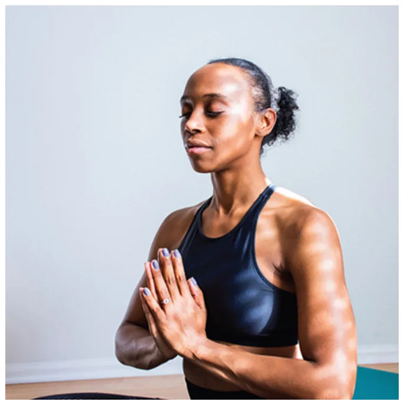
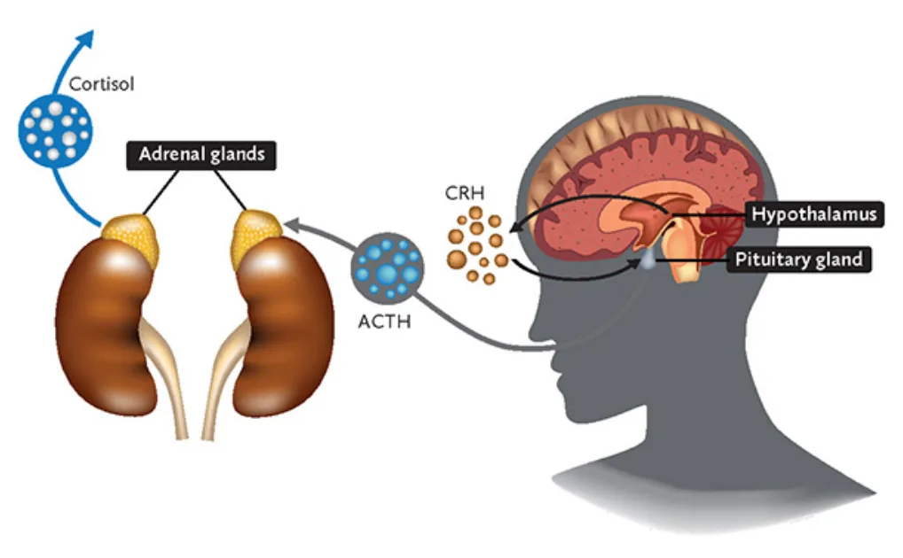
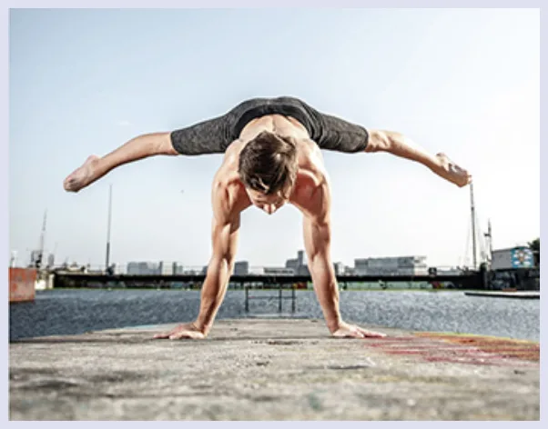
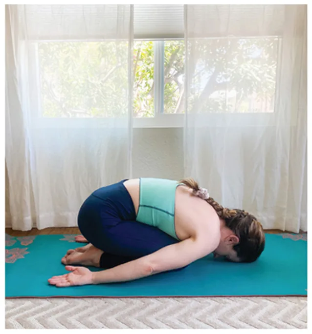
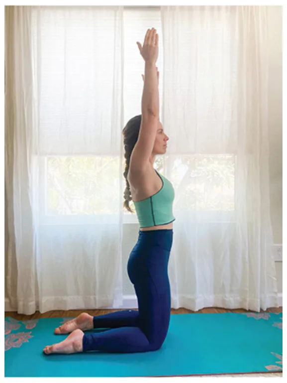
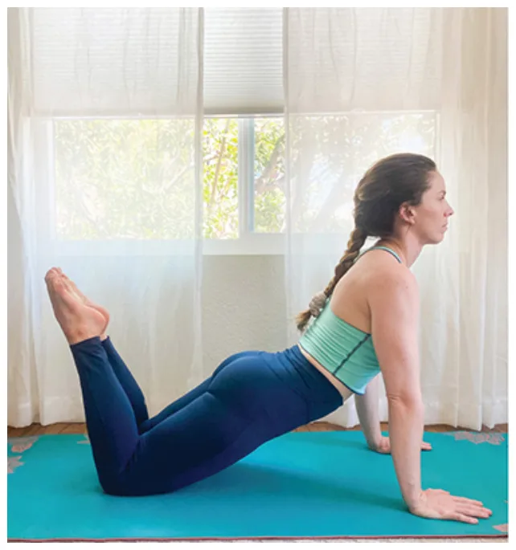
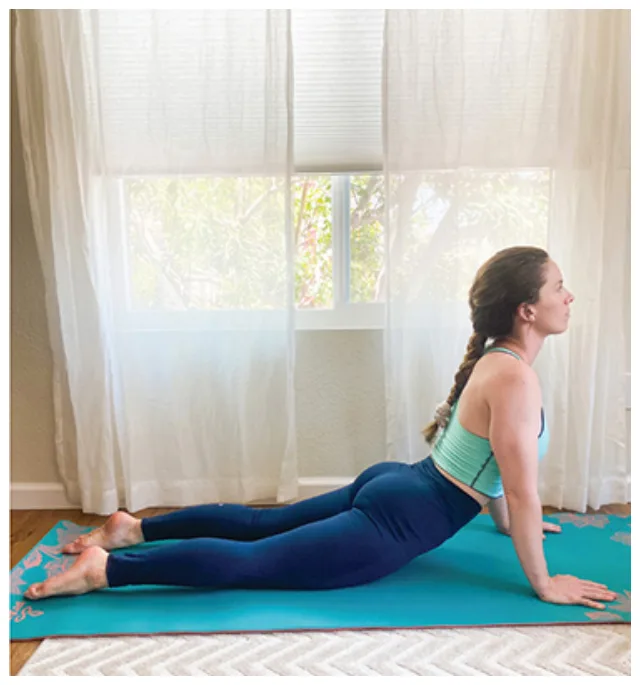

Chương 8 — Căng thẳng, sang chấn và khả năng phục hồi
CHƯƠNG 8
Căng thẳng, Sang chấn và Khả năng Phục hồi
Nhiều người bắt đầu tập yoga hoặc thiền để kiểm soát hoặc giảm mức độ căng thẳng của mình (Hình 8.1). Trong chương này, chúng ta sẽ khám phá cách căng thẳng tác động đến não bộ và cơ thể để có thể nhắm mục tiêu hiệu quả hơn bằng các phương pháp thực hành chiêm nghiệm. Chúng ta cũng sẽ tìm hiểu điều gì xảy ra khi căng thẳng trở thành sang chấn và cách nuôi dưỡng khả năng phục hồi thông qua việc thực hành.
CĂNG THẲNG
Căng thẳng (stress) là trạng thái chịu áp lực về tinh thần, cảm xúc hoặc thể chất phát sinh từ những hoàn cảnh bất lợi hoặc đòi hỏi khắt khe. Mặc dù từ “căng thẳng” thường mang sắc thái tiêu cực, nhưng căng thẳng ở liều lượng nhỏ, được gọi là căng thẳng cấp tính, có thể mang lại lợi ích. Ví dụ, nếu bạn là một giáo viên yoga đang cố gắng nghĩ ra một chuỗi bài tập mới cho lớp học, một chút căng thẳng có thể giúp bạn duy trì sự tập trung và làm việc chăm chỉ hơn để hoàn thành việc chuẩn bị.
Trong khi một chút căng thẳng là bình thường, căng thẳng kéo dài có thể gây suy nhược. Các nhà khoa học tin rằng não bộ được thiết kế để suy nghĩ về tương lai nhằm đưa ra những quyết định giúp chúng ta sinh tồn. Tuy nhiên, nếu những lo lắng này kéo dài quá lâu hoặc quá dữ dội, chúng ta có thể phát triển các tình trạng sức khỏe tâm thần, chẳng hạn như rối loạn lo âu và trầm cảm. Căng thẳng mạn tính có thể làm cạn kiệt các nguồn lực của cơ thể mà không được bù đắp.

Hình 8.1 Thiền và yoga có thể giúp giảm căng thẳng.
Nguồn: Madison Lavern trên Unsplash.
HỆ THẦN KINH PHẢN ỨNG VỚI CĂNG THẲNG NHƯ THẾ NÀO
Căng thẳng có thể được kích hoạt bởi một mối đe dọa có thật, chẳng hạn như chạm trán một con gấu xám, hoặc một mối đe dọa được cảm nhận, như suy nghĩ rằng có một con gấu xám đang rình rập gần đó. Cơ thể xử lý cả mối đe dọa có thật lẫn mối đe dọa được cảm nhận theo cách tương tự nhau, và giải phóng một loạt hormone căng thẳng để khởi phát phản ứng căng thẳng.
Hệ thần kinh tự chủ điều phối phản ứng căng thẳng của chúng ta, bao gồm hệ thần kinh giao cảm và hệ thần kinh phó giao cảm. Hai hệ thống này phối hợp với nhau để duy trì trạng thái cân bằng trong cơ thể gọi là cân bằng nội môi (homeostasis).
Khi não bộ cảm nhận được một mối nguy hiểm có thật hoặc được cảm nhận, hệ thần kinh giao cảm sẽ được kích hoạt như một phần của phản ứng “chiến đấu, bỏ chạy hoặc đóng băng”. Cơ thể chuẩn bị để thoát khỏi nguy hiểm, chống trả nguy hiểm, hoặc đóng băng để tránh bị phát hiện hay giả chết. Một khi hệ thần kinh giao cảm được kích hoạt, nhịp tim tăng lên, cơ bắp căng cứng, nhịp thở nhanh hơn, mồ hôi xuất hiện, và máu cùng các chất dinh dưỡng được chuyển hướng ra khỏi các quá trình nghỉ ngơi, chẳng hạn như tiêu hóa, để hướng tới các hệ thống tham gia vào việc chuẩn bị cho phản ứng chủ động, như cơ xương. Trong thời gian này, hệ thần kinh phó giao cảm về cơ bản ở trạng thái chờ cho đến khi nguy hiểm qua đi. Sau khi nguy hiểm kết thúc, hệ thần kinh giao cảm giảm hoạt động, và hệ thần kinh phó giao cảm tăng cường hoạt động, đưa cơ thể trở lại trạng thái cân bằng.
Phản ứng không tự chủ này là đặc trưng của căng thẳng cấp tính. Trong tình trạng căng thẳng kéo dài hoặc mạn tính, hệ thần kinh giao cảm duy trì trạng thái hoạt động liên tục, gây ra áp lực thể chất lên cơ thể theo thời gian. Một số triệu chứng của căng thẳng mạn tính bao gồm đau cơ, kiệt sức, mất ngủ, đau đầu, chóng mặt, các vấn đề tiêu hóa và suy giảm hệ miễn dịch. Các tình trạng sức khỏe tâm thần, chẳng hạn như rối loạn lo âu và trầm cảm, cùng các rối loạn thoái hóa thần kinh, như bệnh Alzheimer và bệnh Parkinson, cũng được cho là có liên quan đến căng thẳng mạn tính (Liu, Wang và Jiang, 2017).
Hệ thống căng thẳng của não bộ: Các nhà khoa học thần kinh tin rằng căng thẳng làm thay đổi nhiều chất dẫn truyền thần kinh, hormone và hóa chất trong não, bắt đầu từ hạch hạnh nhân (amygdala). Trong lúc căng thẳng, hạch hạnh nhân có thể hoạt động mạnh hơn, kích hoạt hệ thần kinh giao cảm và một con đường căng thẳng chính gọi là trục hạ đồi – tuyến yên – thượng thận (HPA) (Liu, Wang và Jiang, 2017). Trục HPA mô tả sự tương tác giữa vùng hạ đồi, tuyến yên (nằm dưới vùng hạ đồi) và tuyến thượng thận (nằm trên đỉnh hai quả thận), tất cả cùng phối hợp để giúp điều hòa phản ứng căng thẳng của cơ thể bằng cách giải phóng một loạt hormone.
Khi não bộ cảm nhận căng thẳng, vùng hạ đồi giải phóng một loại hormone gọi là hormone giải phóng corticotropin (CRH) để báo hiệu cho tuyến yên rằng hệ thống căng thẳng cần được kích hoạt. Tuyến yên đáp lại bằng cách giải phóng hormone hướng vỏ thượng thận (ACTH) vào máu.
ACTH di chuyển đến tuyến thượng thận để ra hiệu cho chúng bắt đầu làm việc, và tuyến thượng thận đáp lại bằng cách giải phóng các hormone căng thẳng, bao gồm epinephrine, norepinephrine và cortisol vào máu (Hình 8.2). Những hormone này di chuyển nhanh chóng khắp cơ thể. Các thụ thể dành cho hormone căng thẳng nằm trên hầu hết các tế bào và có thể nhanh chóng làm thay đổi nhịp tim, huyết áp và các hệ thống cơ thể khác tham gia vào phản ứng căng thẳng.
Căng thẳng mạn tính có thể dẫn đến nồng độ hormone căng thẳng tăng cao và kéo dài theo thời gian. Nồng độ cortisol cao có thể làm tổn thương các tế bào ở một số vùng nhất định của não, chẳng hạn như hồi hải mã (hippocampus). Quá nhiều cortisol trong hồi hải mã có thể gây ra những thay đổi về cấu trúc và thậm chí là chết tế bào. Những thay đổi này có thể gây ra tác động lâu dài và làm biến đổi trí nhớ, nhận thức và thậm chí cả các phản ứng với căng thẳng trong tương lai (Lupien et al., 2009).

Hình 8.2 Trục hạ đồi – tuyến yên – thượng thận (HPA).
Hệ thần kinh giao cảm trong hành động: Một hệ thần kinh giao cảm hoạt động quá mức không phải là điều tốt, nhưng một hệ thần kinh giao cảm hoạt động bình thường là cần thiết cho việc tập luyện cường độ cao. Tập thể dục cường độ cao đòi hỏi nhịp tim tăng lên, và các mạch máu giãn ra rồi co lại để đưa chất dinh dưỡng và oxy đến cơ bắp (Hearon và Dinenno, 2015). Phản ứng này sẽ không thể xảy ra nếu không có sự kích hoạt ở một mức độ nhất định của hệ thần kinh giao cảm.

Hình 8.3 Tập luyện cường độ cao, có thể bao gồm một số tư thế yoga, giúp kích hoạt hệ thần kinh giao cảm.
Nguồn: Patrick Kool trên Unsplash.
Hệ thần kinh phó giao cảm: Các bài tập vận động chậm rãi, có chủ đích hơn và thiền định nhắm vào hệ thần kinh phó giao cảm, giúp cơ thể giải phóng căng thẳng và bắt đầu quá trình phục hồi cũng như nuôi dưỡng.
Hệ thần kinh phó giao cảm là hệ thống “nghỉ ngơi và tiêu hóa”. Sự kích hoạt của hệ thần kinh này có thể kích thích các cơ trong đường tiêu hóa xử lý thức ăn và làm chậm nhịp tim. Dây thần kinh phế vị (vagus nerve) kết nối hệ thần kinh phó giao cảm với nhiều cơ quan khắp cơ thể. Từ vagus trong tiếng Latinh có nghĩa là “lang thang” vì nó kết nối với rất nhiều cấu trúc khác nhau.
Thiền là một phương pháp phổ biến để kích hoạt hệ thần kinh phó giao cảm và giảm căng thẳng. Một bài tổng quan tài liệu quy mô lớn do các nhà nghiên cứu từ Đại học Johns Hopkins thực hiện, bao gồm 47 nghiên cứu với tổng cộng 3.515 người tham gia, cho thấy thiền có thể mang lại vô số lợi ích sức khỏe giúp giảm căng thẳng (Goyal et al., 2014). Bằng chứng cho thấy các chương trình thiền có hiệu quả trong việc giảm lo âu, trầm cảm, đau đớn và mức độ căng thẳng. Thiền cũng cải thiện sức khỏe tâm thần tổng thể trong các nghiên cứu. Tuy nhiên, vẫn chưa rõ liệu thiền có hiệu quả hơn các lựa chọn điều trị khác như tập thể dục, dùng thuốc hay các liệu pháp hành vi hay không. Nhiều khả năng cả bốn phương pháp đều mang lại một mức độ lợi ích nhất định trong việc giảm căng thẳng.
Những điểm chính cần ghi nhớ
Căng thẳng là trạng thái chịu áp lực về tinh thần, cảm xúc hoặc thể chất phát sinh từ những hoàn cảnh bất lợi hoặc đòi hỏi khắt khe. Trong khi căng thẳng cấp tính có thể có lợi, căng thẳng mạn tính có thể làm cạn kiệt nguồn lực của cơ thể theo thời gian và dẫn đến các tình trạng sức khỏe tâm thần, như rối loạn lo âu hoặc trầm cảm. Hệ thần kinh giao cảm được kích hoạt khi não bộ cảm nhận một mối đe dọa có thật hoặc được cảm nhận. Trục hạ đồi – tuyến yên – thượng thận (HPA) là một con đường căng thẳng được kích hoạt khi hệ thần kinh giao cảm khởi phát. Trục HPA sản sinh ra các hormone căng thẳng, chẳng hạn như cortisol, có thể gây hại cho não khi được giải phóng liên tục. Thực hành thiền có thể mang lại nhiều lợi ích sức khỏe, chẳng hạn như giảm lo âu, trầm cảm, đau đớn và căng thẳng.
CĂNG THẲNG MẠN TÍNH VÀ TÌNH TRẠNG VIÊM
Trong suốt thời gian căng thẳng mạn tính, hệ thần kinh giao cảm và trục HPA liên tục bị kích hoạt để giải phóng ngày càng nhiều hormone căng thẳng. Những hormone này can thiệp vào sự cân bằng nội môi của cơ thể và có thể gây tổn thương theo thời gian. Nó giống như một chiếc vòi nước bị rò rỉ cứ nhỏ giọt liên tục vào bồn rửa. Nồng độ cortisol có thể tăng vọt và duy trì ở mức cao quá lâu, dẫn đến các vấn đề như huyết áp cao, tăng đường huyết, ức chế miễn dịch, trầm cảm và chết tế bào thần kinh, đặc biệt là ở hồi hải mã (Venkatesh et al., 2020). Sự gia tăng kéo dài của epinephrine và norepinephrine có thể làm tăng cholesterol máu và nồng độ axit béo tự do cũng như ức chế hệ miễn dịch.
Căng thẳng kéo dài cũng có thể dẫn đến viêm mạn tính. Thông thường, viêm là một phần của phản ứng miễn dịch nhằm chống lại các tác nhân gây hại như vi khuẩn và virus, đồng thời bắt đầu quá trình chữa lành. Tuy nhiên, trong tình trạng viêm mạn tính, cơ thể giải phóng các tế bào gây viêm ngay cả khi không bị tấn công hay tổn thương tích cực. Viêm mạn tính là một thành phần then chốt của các bệnh mạn tính và các bệnh lý liên quan đến căng thẳng (Liu, Wang và Jiang, 2017).
Mặc dù có mối liên hệ chặt chẽ, vẫn còn rất nhiều điều cần tìm hiểu về các con đường kết nối giữa căng thẳng và tình trạng viêm. Các nhà khoa học biết rằng căng thẳng có thể kích hoạt phản ứng viêm trong não cũng như trong cơ thể (Liu, Wang và Jiang, 2017). Một trong những chất dẫn truyền thần kinh chính tham gia vào mối liên hệ này là norepinephrine, một nhân tố chủ chốt trong hệ thần kinh giao cảm. Một số nghiên cứu đã chỉ ra rằng norepinephrine có thể làm tăng giải phóng các yếu tố thúc đẩy quá trình viêm (Gosain et al., 2006).
Các dấu ấn sinh học phổ biến của căng thẳng và tình trạng viêm: Dấu ấn sinh học (biomarker) là một chất có thể đo lường được, biểu thị một trạng thái sinh học, chẳng hạn như căng thẳng hoặc viêm. Các nhà nghiên cứu sử dụng dấu ấn sinh học để kiểm tra mọi thứ từ hệ miễn dịch cho đến trầm cảm và bệnh Alzheimer. Ví dụ, hemoglobin A1C là một dấu ấn sinh học thường dùng cho bệnh tiểu đường. Dưới đây là một số dấu ấn sinh học phổ biến của căng thẳng và tình trạng viêm được sử dụng trong các nghiên cứu về yoga:
Yếu tố hoại tử khối u alpha (TNF-α): một loại protein được sản sinh trong quá trình viêm giúp hỗ trợ kháng nhiễm trùng và ung thư. Nó cũng có thể tạo ra các tín hiệu dẫn đến chết tế bào (Idriss và Naismith, 2000). Interleukin-6 (IL-6): một loại protein được sản sinh để đáp ứng với nhiễm trùng và tổn thương mô. Nó cũng tham gia vào phản ứng viêm và miễn dịch (Tanaka, Narazaki và Kishimoto, 2014). Interleukin-1β (IL-1β): một loại protein đóng vai trò trung gian chính của phản ứng viêm và khả năng kháng lại mầm bệnh (Lopez-Castejon và Brough, 2011). Protein phản ứng C (CRP): một loại protein tham gia vào phản ứng viêm và miễn dịch. Nó có liên quan đến nhiều bệnh viêm nhiễm, chẳng hạn như bệnh Alzheimer và bệnh tim mạch (Luan và Yao, 2018).
Yoga có thể làm giảm cả căng thẳng và tình trạng viêm. Các nhà nghiên cứu từ Trường Y thuộc Đại học Bang Ohio đã kiểm tra tác động của yoga lên phản ứng hormone và viêm giữa những người tập Hatha yoga mới bắt đầu và người tập lâu năm để tìm hiểu thêm về mối liên hệ này (Kiecolt-Glaser et al., 2010). Họ nhận thấy rằng, nhìn chung, các buổi tập yoga giúp tăng cường cảm giác tích cực của người tham gia. Khi các nhà khoa học so sánh người mới tập với người tập lâu năm, những người mới tập có nồng độ dấu ấn sinh học căng thẳng gọi là interleukin-6 cao hơn 41% so với người tập lâu năm. Các tác giả lưu ý rằng sự khác biệt về nồng độ hormone căng thẳng có thể được giải thích bởi số năm thực hành (Hình 8.4). Người tập lâu năm có thể điều hòa phản ứng căng thẳng tốt hơn, từ đó làm giảm phản ứng viêm so với người mới tập.

Hình 8.4 Những người tập yoga lâu năm cho thấy nồng độ dấu ấn sinh học căng thẳng/viêm interleukin-6 thấp hơn ở thời điểm ban đầu, sau buổi tập yoga (sau can thiệp) và vào sáng hôm sau so với những người mới tập yoga.
Cũng nhóm các nhà khoa học đó đã tiến hành một thử nghiệm đối chứng ngẫu nhiên nghiêm ngặt bao gồm 200 người sống sót sau ung thư vú vài năm sau đó (KiecoltGlaser et al., 2014). Họ đã kiểm tra tác động của Hatha yoga đối với các dấu ấn viêm (interleukin-6, yếu tố hoại tử khối u alpha và interleukin-1β) cùng với mức độ mệt mỏi, sức sống và trầm cảm được báo cáo.
Những người tham gia được phân vào nhóm tập yoga (ba tháng tập Hatha yoga 90 phút, hai lần một tuần) hoặc nhóm đối chứng. Các nhà khoa học nhận thấy rằng sau ba tháng tập yoga, những người tham gia có các chỉ số viêm thấp hơn (interleukin-6 và interleukin-1β, nhưng không giảm yếu tố hoại tử khối u alpha) và báo cáo ít mệt mỏi hơn so với nhóm đối chứng. Kết quả cho thấy việc tập yoga thường xuyên có thể thúc đẩy sức khỏe bằng cách giảm nhiều chỉ số viêm. Hiện vẫn chưa rõ tại sao một số chỉ số viêm lại giảm trong khi các chỉ số khác thì không.
Trong một nghiên cứu khác, các nhà khoa học từ Trung tâm Y tế Đại học Nebraska đã tiến hành tổng quan tài liệu để xem xét tác động của các phong cách yoga khác nhau đối với các dấu ấn viêm (Djalilova et al., 2018). Họ đã đưa 15 nghiên cứu vào bài tổng quan và nhận thấy phần lớn các nghiên cứu cho thấy can thiệp yoga làm giảm interleukin-6, protein phản ứng C và yếu tố hoại tử khối u alpha. Ngoài ra, phân tích cũng chỉ ra rằng “liều lượng” yoga cao hơn (>1.000 phút tập yoga mỗi nghiên cứu) dẫn đến mức giảm viêm lớn hơn từ thời điểm ban đầu đến sau khi can thiệp yoga.
Nhìn chung, kết quả cho thấy yoga có thể là một biện pháp can thiệp thành công để giảm viêm.
Thiền cũng là một phương tiện hiệu quả để giảm căng thẳng nhằm giảm viêm ở cấp độ tế bào. Các nhà khoa học từ Đại học Harvard và Bệnh viện Đa khoa Massachusetts đã kiểm tra cách thiền ảnh hưởng đến quá trình trao đổi chất và các con đường viêm của cơ thể (Bhasin et al., 2013). Họ phát hiện ra rằng việc thiền, ngay cả chỉ một lần, cũng có khả năng làm suy giảm tác động của các gen liên quan đến phản ứng viêm và căng thẳng, đồng thời thúc đẩy sự kích hoạt của các gen liên quan đến quá trình trao đổi chất và tuổi thọ DNA.
Khởi phát lòng từ bi đối với người khác, chẳng hạn như trong thiền tâm từ (loving-kindness meditation), có thể làm giảm các dấu ấn căng thẳng và viêm, như cortisol (Buchanan et al., 2012). Các nhà khoa học từ Đại học Emory và Đại học Arizona đã kiểm tra xem việc rèn luyện lòng từ bi có liên quan như thế nào đến một dấu ấn viêm gọi là protein phản ứng C (Pace et al., 2013). Trong nghiên cứu, 71 thanh thiếu niên trong hệ thống chăm sóc nuôi dưỡng ở Georgia được phân ngẫu nhiên vào nhóm rèn luyện lòng từ bi kéo dài sáu tuần hoặc nhóm đối chứng. Các mẫu nước bọt được thu thập từ người tham gia trước và sau khóa rèn luyện để đo nồng độ protein phản ứng C. Mặc dù hai nhóm không khác biệt về nồng độ protein phản ứng C, nhưng trong nội bộ nhóm rèn luyện lòng từ bi, số buổi tập có liên quan đến việc giảm nồng độ protein này. Do đó, rèn luyện lòng từ bi càng nhiều thì các chỉ số viêm càng giảm (Pace et al., 2013).
Giảm căng thẳng dựa trên chánh niệm có thể cải thiện tâm trạng và sức khỏe tâm lý. Vì những yếu tố này có liên quan đến chức năng hệ miễn dịch, các nhà khoa học từ Trung tâm Ung thư Fox Chase ở Pennsylvania đã bắt tay vào kiểm tra xem liệu giảm căng thẳng dựa trên chánh niệm có thể tác động tích cực đến chức năng miễn dịch hay không (Fang et al., 2010). Hai mươi bốn người tham gia đã trải qua một khóa học giảm căng thẳng dựa trên chánh niệm kéo dài hai tháng. Mỗi buổi học kéo dài 2,5 giờ và người tham gia được yêu cầu thực hành thiền 20–30 phút tại nhà hầu hết các ngày trong tuần. Người tham gia được kiểm tra ở thời điểm ban đầu và trong vòng hai tuần sau khi kết thúc khóa học. Nhìn chung, người tham gia báo cáo có sự cải thiện đáng kể về mức độ lo âu, điều này đi kèm với sự sụt giảm protein phản ứng C. Những cá nhân báo cáo sự cải thiện về sức khỏe tâm thần tổng thể cho thấy hoạt động ly giải tế bào của tế bào tiêu diệt tự nhiên (natural killer cell) tăng lên – một thước đo của hoạt động miễn dịch.
Những điểm chính cần ghi nhớ
Căng thẳng mạn tính có thể dẫn đến các vấn đề sức khỏe như huyết áp cao và chết tế bào thần kinh trong não. Trong tình trạng viêm mạn tính, cơ thể giải phóng các tế bào gây viêm trong một khoảng thời gian kéo dài. Dấu ấn sinh học là một chất có thể đo lường được, biểu thị một trạng thái sinh học, chẳng hạn như căng thẳng hoặc viêm. Thực hành yoga và thiền có thể làm giảm mức độ viêm trong cơ thể.
CĂNG THẲNG VÀ HỆ MIỄN DỊCH
Căng thẳng và hệ miễn dịch đan xen chặt chẽ với nhau. Căng thẳng nhẹ, ngắn hạn có thể tăng cường hệ miễn dịch, trong khi căng thẳng dữ dội hoặc kéo dài có thể ức chế nó. Căng thẳng tạo ra các hormone gây phản ứng viêm, từ đó làm suy giảm hệ miễn dịch. Nhưng khi nói về căng thẳng, không chỉ căng thẳng thể chất mới có thể ảnh hưởng đến hệ miễn dịch, mà căng thẳng tâm lý cũng vậy. Thực tế, căng thẳng tâm lý là yếu tố góp phần chính vào nhiều tình trạng viêm nhiễm (Rosenkranz et al., 2013).
Yoga và thiền có thể làm giảm căng thẳng tâm lý, và do đó làm giảm phản ứng viêm để cải thiện chức năng hệ miễn dịch. Trong một bài tổng quan gần đây gồm 15 thử nghiệm đối chứng ngẫu nhiên kiểm tra tác động của yoga lên hệ miễn dịch, các nhà khoa học nhận thấy yoga có thể điều hòa giảm các dấu ấn tiền viêm, chẳng hạn như interleukin-1β (Falkenberg, Eising và Peters, 2018). Vì vậy, yoga có thể là một công cụ hiệu quả để giảm viêm và cải thiện phản ứng miễn dịch. Phát hiện này đặc biệt có ý nghĩa đối với những người mắc các bệnh có yếu tố miễn dịch hoặc viêm, chẳng hạn như viêm khớp dạng thấp hoặc bệnh Crohn.
Thiền chánh niệm có thể vượt trội hơn các hình thức giảm căng thẳng khác. Các nhà khoa học từ Phòng thí nghiệm Waisman về Hình ảnh học Não bộ & Hành vi và Trung tâm Nghiên cứu Tâm trí Khỏe mạnh tại Đại học Wisconsin-Madison đã tìm cách kiểm tra hiệu quả của biện pháp can thiệp giảm căng thẳng dựa trên chánh niệm (MBSR) đối với căng thẳng và tình trạng viêm so với một chương trình nâng cao sức khỏe gọi là Chương trình Tăng cường Sức khỏe (Health Enhancement Program) (Rosenkranz et al., 2013). Chương trình Tăng cường Sức khỏe là một nhóm đối chứng tích cực được thiết kế cho các nghiên cứu về MBSR, và nó giống hệt MBSR ngoại trừ việc không có thành phần chánh niệm.
Những người tham gia được phân vào nhóm MBSR hoặc nhóm Chương trình Tăng cường Sức khỏe và hoàn thành khóa học hai tháng được chỉ định. Căng thẳng tâm lý được tạo ra bằng Bài kiểm tra Căng thẳng Xã hội Trier (Trier Social Stress Test), một thử nghiệm mà người tham gia phải thuyết trình và tính nhẩm trước khán giả (Kirschbaum, Pirke và Hellhammer, 1993), còn tình trạng viêm được tạo ra bằng cách thoa kem capsaicin lên da cẳng tay. Kem capsaicin được làm từ chiết xuất ớt cay và có thể gây cảm giác nóng rát.
Các nhà nghiên cứu đã đo mức độ căng thẳng và tình trạng viêm trước và sau các khóa huấn luyện. Cả hai nhóm đều cho thấy nồng độ cortisol tăng lên trong bài kiểm tra căng thẳng và giảm cảm giác căng thẳng về tâm lý cũng như thể chất sau các biện pháp can thiệp. Mặc dù cả hai nhóm đều có nồng độ hormone căng thẳng tương tự nhau, nhóm MBSR có phản ứng viêm ít hơn sau bài kiểm tra căng thẳng so với nhóm Chương trình Tăng cường Sức khỏe. Các tác giả lưu ý rằng kết quả này gợi ý thiền có thể có lợi cho những người mắc các bệnh lý viêm nhiễm, và thiền thậm chí có thể hiệu quả hơn trong việc giảm viêm so với các biện pháp nâng cao sức khỏe khác (Rosenkranz et al., 2013).
Một yếu tố tương quan khác của sức khỏe và chức năng miễn dịch được sử dụng trong nghiên cứu là enzyme telomerase, một thước đo sức khỏe tế bào (Epel et al., 2004). Telomerase hoạt động để giữ cho telomere – phần đầu mút của nhiễm sắc thể – không bị bung ra và duy trì độ dài. Hoạt động telomerase cao hơn có liên quan đến các dấu hiệu chức năng miễn dịch tốt hơn, và telomere dài hơn có liên hệ trực tiếp đến sức khỏe và tuổi thọ (Wolkowitz et al., 2011).
Các nhà khoa học từ Đại học New England ở Úc đã tiến hành một bài tổng quan các nghiên cứu liên quan đến thiền chánh niệm và telomerase (Schutte và Malouff, 2014). Các nhà nghiên cứu nhận thấy rằng trên cả bốn thử nghiệm đối chứng ngẫu nhiên, bao gồm tổng cộng 190 người tham gia, thiền chánh niệm có liên quan đến việc tăng hoạt động của telomerase. Kết quả gộp cho thấy thiền có thể tác động tích cực đến các dấu ấn về sức khỏe tế bào và chức năng miễn dịch (Schutte và Malouff, 2014).
Những điểm chính cần ghi nhớ
Căng thẳng nhẹ, ngắn hạn có thể tăng cường hệ miễn dịch, trong khi căng thẳng dữ dội hoặc kéo dài có thể ức chế nó. Cả căng thẳng thể chất và tâm lý đều có thể góp phần gây viêm và ức chế hệ miễn dịch. Yoga và thiền có thể làm giảm các dấu ấn viêm và cải thiện chức năng hệ miễn dịch. Thiền có thể hiệu quả hơn các chương trình nâng cao sức khỏe khác và có thể làm thay đổi phản ứng của cơ thể đối với căng thẳng. Thiền có thể có lợi cho sức khỏe tế bào bằng cách tăng cường hoạt động của enzyme telomerase.
NÃO BỘ BỊ ẢNH HƯỞNG BỞI SANG CHẤN
Mặc dù việc thỉnh thoảng trải qua căng thẳng là lành mạnh, nhưng căng thẳng dữ dội có thể dẫn đến những tác động bất lợi lên não bộ. Trong tài liệu nghiên cứu, ranh giới phân biệt giữa trải nghiệm căng thẳng và trải nghiệm sang chấn đôi khi chưa rõ ràng. Các nhà khoa học gần đây đã đề xuất rằng trong khi các trải nghiệm căng thẳng có thể dẫn đến khả năng phục hồi, thì các trải nghiệm sang chấn thường dẫn đến sự phát triển của các bệnh lý tâm thần, như rối loạn lo âu và trầm cảm (Richter-Levin và Sandi, 2021). Trải nghiệm sang chấn có thể do lạm dụng, bỏ bê và bạo lực, cùng nhiều nguyên nhân khác, và có thể tác động vật lý lên não bộ. Một số vùng não có thể bị teo nhỏ lại, trong khi các vùng khác phát triển to ra, và các mạch thần kinh bị tái kết nối để đáp ứng với các sự kiện sang chấn.
Sang chấn cũng có thể làm thay đổi cách não bộ phản ứng với căng thẳng. Với quá nhiều căng thẳng, hạch hạnh nhân có thể trở nên hoạt động quá mức, báo cho cơ thể biết rằng nó đang liên tục gặp nguy hiểm. Một khi hạch hạnh nhân trở nên tăng nhạy cảm, nó có thể dễ dàng bị kích hoạt hơn bởi những mức độ căng thẳng thấp hơn. Điều này có thể dẫn đến những phản ứng thái quá ngay cả khi đối mặt với một tác nhân gây căng thẳng nhẹ.
Trung tâm ra quyết định – vỏ não trước trán (prefrontal cortex) – cũng có thể ngừng hoạt động trong lúc căng thẳng dữ dội, dẫn đến các vấn đề về ra quyết định, sự tập trung và khả năng học tập. Căng thẳng dữ dội có thể gây ra những thay đổi ở vỏ não vành trước (anterior cingulate cortex), một vùng giúp điều hòa cảm xúc. Theo thời gian, việc kiểm soát cảm xúc trong một khoảnh khắc căng thẳng có thể trở nên ngày càng khó khăn hơn so với trước khi tiếp xúc với căng thẳng dữ dội. Ví dụ, nếu một người bị hoảng sợ, họ có thể vẫn tiếp tục sợ hãi rất lâu sau khi tác nhân kích hoạt đã được loại bỏ.
Những hậu quả lâu dài này của sang chấn có thể đặc biệt gây hại cho trẻ em. Trẻ em trải qua sang chấn từ sớm trong đời có thể dễ mắc các rối loạn sức khỏe tâm thần hơn, chẳng hạn như rối loạn lo âu, rối loạn căng thẳng sau sang chấn (PTSD) và trầm cảm.
ĐIỀU GÌ KHÔNG GIẾT ĐƯỢC BẠN SẼ LÀM BẠN MẠNH MẼ HƠN: NUÔI DƯỠNG KHẢ NĂNG PHỤC HỒI
Khả năng phục hồi (resilience) là khả năng hồi phục hoặc “bật dậy” sau khi trải qua căng thẳng. Giống như việc học một kỹ năng, khả năng phục hồi có thể được nuôi dưỡng và cải thiện thông qua thực hành. Các phương pháp thực hành chiêm nghiệm, chẳng hạn như yoga và thiền, có thể làm thay đổi cách một người trải nghiệm căng thẳng bằng cách gia tăng khả năng phục hồi.
Ví dụ, đại dịch virus corona đã khiến cả thế giới ngưng trệ vào năm 2020. Đường phố trở nên vắng lặng, các xa lộ không một bóng người và các quốc gia công nghiệp hóa bước vào giai đoạn phong tỏa. Sự cô lập của những khoảng thời gian cách ly và phong tỏa kéo dài kết hợp với nỗi sợ mắc COVID-19 đã thử thách sức khỏe tâm thần của con người.
Phụ nữ thường phải gánh vác nhiều gánh nặng hơn vì giờ đây họ phải xoay xở giữa việc làm việc tại nhà với việc chăm sóc và giáo dục con cái, do nhiều nhà trẻ và trường học đóng cửa. Hệ quả là phụ nữ có nguy cơ cao hơn nam giới trong việc phát triển các triệu chứng căng thẳng, lo âu và trầm cảm (Matiz et al., 2020).
Nhiều người đã tìm kiếm các phương pháp thực hành tâm – thân mà họ có thể tập tại nhà để bảo vệ sức khỏe tâm thần của mình. Tại Ý, các nhà nghiên cứu đã khảo sát tác động của khóa thiền định hướng chánh niệm kéo dài hai tháng lên sức khỏe tâm thần của 66 nữ giáo viên trong đại dịch virus corona (Matiz et al., 2020). Các nhà khoa học không chủ đích nghiên cứu tác động của chánh niệm trong đại dịch, nhưng thời điểm của nghiên cứu đã dẫn đến một số kết luận quan trọng về lợi ích của thiền trong giai đoạn khủng hoảng tâm lý dữ dội.
Dựa trên hồ sơ tính cách, các giáo viên được chia thành nhóm có khả năng phục hồi cao và nhóm có khả năng phục hồi thấp. Các nhóm đã làm bài đánh giá tự báo cáo một tháng trước và một tháng sau khi dịch virus corona bùng phát. Cả hai nhóm đều cho thấy sự cải thiện về mức độ lo âu, trầm cảm, sự đồng cảm, kiệt sức cảm xúc, cảm giác an lạc và mức độ chánh niệm sau khóa huấn luyện thiền định hướng chánh niệm. Sự cải thiện các triệu chứng trầm cảm và cảm giác an lạc ở nhóm có khả năng phục hồi thấp cao hơn so với nhóm có khả năng phục hồi cao. Kết quả cho thấy thiền chánh niệm có thể cải thiện đáng kể nhiều khía cạnh của sức khỏe tâm thần, ngay cả ở những nhóm dễ bị tổn thương, chẳng hạn như những người có khả năng phục hồi kém hơn (Matiz et al., 2020).
Thiền chánh niệm cho khả năng phục hồi: Hãy ngồi vào một tư thế thoải mái, đặt tay ở bất cứ đâu bạn thấy dễ chịu. Bắt đầu chú ý đến cơ thể, trọng lượng của cơ thể. Hãy cho phép bản thân trở nên tò mò hơn về cơ thể vật lý.
Chú ý đến bất kỳ bộ phận nào trên cơ thể có thể đang bị căng cứng. Hít thở vào vùng căng cứng đó, cho phép nó nhẹ nhàng tan biến.
Và bây giờ hãy đưa sự chú ý về hơi thở. Bạn cảm nhận hơi thở ở đâu trong cơ thể mình? Cảm nhận luồng không khí đi vào qua mũi và đi xuống phổi. Chú ý cũng chính luồng không khí đó khi nó di chuyển ngược lên và thoát ra ngoài qua mũi.
Đi theo dòng chảy tự nhiên này của hơi thở. Tập trung vào những cảm giác của hơi thở. Tìm ra điểm mà một hơi thở kết thúc và hơi thở tiếp theo bắt đầu.
Nếu tâm trí bạn bắt đầu lang thang, hãy ghi nhận suy nghĩ đó, và
quay trở lại với hơi thở. Nếu tâm trí lại lang thang lần nữa, không sao cả. Hãy tử tế với chính mình. Đây là điều bình thường. Đưa sự tập trung trở lại hơi thở và để nó dẫn dắt bạn vào trạng thái bình tĩnh sâu hơn. Ở lại đây một lát. Đắm mình trọn vẹn trong khoảnh khắc này.
Hiện diện trọn vẹn. Chậm rãi, nhẹ nhàng, bắt đầu quay trở lại với hơi thở. Hãy để hơi thở giống như những con sóng khi nó đi vào và đi ra khỏi cơ thể. Lướt trên những con sóng ấy khi bạn quay trở lại với thế giới xung quanh.
Bắt đầu cử động nhẹ các ngón tay và ngón chân khi bạn cảm nhận xúc giác. Mở mắt nếu bạn đang nhắm mắt, và đắm mình trong bản thể mới mẻ, thư thái này.
Những điểm chính cần ghi nhớ
Các trải nghiệm sang chấn có thể dẫn đến sự phát triển của các bệnh lý, như rối loạn lo âu và trầm cảm. Hạch hạnh nhân và vỏ não trước trán có thể bị biến đổi khi tiếp xúc với căng thẳng sang chấn, dẫn đến những thay đổi về cấu trúc và chức năng não bộ. Khả năng phục hồi là khả năng hồi phục hoặc “bật dậy” sau khi trải qua căng thẳng. Thiền có thể cải thiện đáng kể nhiều khía cạnh của sức khỏe tâm thần, ngay cả ở những nhóm dễ bị tổn thương, chẳng hạn như những người có khả năng phục hồi kém hơn.
RỐI LOẠN LO ÂU
Rối loạn lo âu là một trong những tình trạng sức khỏe tâm thần phổ biến nhất tại Hoa Kỳ, ảnh hưởng đến gần một phần năm người trưởng thành với tỷ lệ nữ giới mắc bệnh cao gấp đôi nam giới, theo Hiệp hội Lo âu và Trầm cảm Hoa Kỳ (ADAA). Các triệu chứng của rối loạn lo âu bao gồm lo lắng dai dẳng và quá mức, nỗi sợ hãi phi lý và các cơn hoảng loạn. Rối loạn lo âu có thể được điều trị thành công bằng thuốc, liệu pháp hành vi nhận thức và các phương pháp khác, tuy nhiên chỉ có 43% số người được tiếp cận bất kỳ hình thức điều trị nào (ADAA, 2022).
Nguyên nhân nào gây ra rối loạn lo âu? Mặc dù rối loạn lo âu rất phổ biến tại Hoa Kỳ, các nhà khoa học vẫn đang cố gắng tìm hiểu các cơ chế liên quan đến tình trạng này. Rối loạn lo âu được đặc trưng bởi nhiều rối loạn khác nhau trong hệ thống nội tiết thần kinh, các chất dẫn truyền thần kinh và giải phẫu thần kinh (Martin et al., 2009). Chúng được cho là bắt nguồn từ sự mất cân bằng ở các trung tâm cảm xúc của não bộ và nhiều khả năng có liên quan đến hạch hạnh nhân.
Các trung tâm cảm xúc của não bộ được gọi chung là hệ viền (limbic system). Hai trong số các vùng não này, vỏ não thùy đảo (insula) và vỏ não vành (cingulate cortex), tham gia vào việc tích hợp thông tin cảm giác và tâm trạng cũng như các khía cạnh nhận thức của cơn đau và nhận thức nội tại, hay còn gọi là nội cảm (interoception). Trung tâm trí nhớ, hồi hải mã, có thể làm giảm hoạt động của trục hạ đồi – tuyến yên – thượng thận (HPA), còn hạch hạnh nhân tham gia vào việc khởi phát phản ứng sợ hãi và truy xuất các ký ức liên quan đến nỗi sợ. Các nghiên cứu hình ảnh học đã chỉ ra rằng những người mắc chứng lo âu thường có hạch hạnh nhân lớn hơn so với những người không mắc chứng lo âu (Martin et al., 2009). Những vùng não này phối hợp cùng nhau tạo thành hệ viền, nơi xử lý phản ứng cảm xúc. Khi hệ thống này bị gián đoạn, tâm trạng có thể trở nên mất ổn định.
Các chất dẫn truyền thần kinh là phương tiện giao tiếp bên trong và giữa các vùng não. Các nhà khoa học tin rằng sự giao tiếp quá mức hoặc hoạt động dẫn truyền thần kinh tăng cao có thể dẫn đến rối loạn lo âu. Sự gia tăng hoạt động này có thể do quá nhiều dẫn truyền thần kinh kích thích bởi glutamate, hoặc do thiếu sự ức chế bởi axit γ-amino-butyric (GABA).
Các chất dẫn truyền thần kinh serotonin, norepinephrine và dopamine cũng có liên quan đến các rối loạn tâm trạng. Các nhà khoa học tin rằng serotonin đóng một vai trò trong các rối loạn tâm trạng vì thuốc ức chế tái hấp thu serotonin chọn lọc (SSRIs) – giúp tăng nồng độ serotonin tại khe synap (vị trí giao tiếp giữa các tế bào thần kinh) – hỗ trợ làm giảm các triệu chứng lo âu và trầm cảm ở nhiều người.
Các yếu tố di truyền và môi trường, chẳng hạn như chế độ ăn uống và tập thể dục, cũng có thể đóng một vai trò trong tính dễ bị tổn thương để phát triển chứng lo âu. Cùng một nhóm gen có thể liên quan đến nhiều loại rối loạn tâm trạng khác nhau, đặc biệt là những gen ảnh hưởng đến con đường căng thẳng của trục HPA. Các yếu tố môi trường có thể tác động trực tiếp lên sự biểu hiện gen để bật hoặc tắt các gen một cách hiệu quả, dẫn đến một chuỗi phản ứng gây ra cả các tình trạng sức khỏe thể chất lẫn tâm thần.
Yoga cho chứng lo âu: Yoga dường như có hiệu quả trong việc giảm các triệu chứng lo âu ở trẻ em, thanh thiếu niên và người trẻ tuổi, nhưng có thể kém hiệu quả hơn ở nhóm người trưởng thành. Một bài tổng quan các biện pháp can thiệp yoga cho thanh thiếu niên và trẻ em cho thấy gần như toàn bộ 16 nghiên cứu được phân tích đều ghi nhận mức độ lo âu giảm xuống sau khi can thiệp bằng yoga (Weaver và Darragh, 2015). Trong một nghiên cứu thực nghiệm, các nhà nghiên cứu cũng nhận thấy rằng một chương trình can thiệp yoga và thiền kéo dài sáu tuần đã làm giảm căng thẳng và lo âu ở sinh viên đại học (Lemay, Hoolahan và Buchanan, 2019). Tuy nhiên, nghiên cứu của họ chỉ gồm 17 sinh viên và không có nhóm đối chứng.
Mặc dù có vẻ hợp lý khi cho rằng yoga sẽ giúp cải thiện các triệu chứng lo âu, nhiều nghiên cứu lại tìm thấy những kết quả trái ngược, đặc biệt là ở nhóm người trưởng thành. Một bài tổng quan gồm tám thử nghiệm đối chứng ngẫu nhiên với tổng cộng 319 người tham gia cho thấy yoga dường như không giúp ích cho những người được chẩn đoán mắc chứng lo âu theo Sổ tay Chẩn đoán và Thống kê (“DSM”, cuốn sách tiêu chuẩn được các bác sĩ lâm sàng và bác sĩ tâm thần tại Hoa Kỳ sử dụng để chẩn đoán), nhưng lại mang lại lợi ích cho những cá nhân không có chẩn đoán chính thức và những người được chẩn đoán bằng các phương pháp khác (Cramer et al., 2018). Vì vậy, yoga có thể là một biện pháp can thiệp hiệu quả đối với những người có mức độ lo âu chủ quan cao, nhưng bằng chứng ít hứa hẹn hơn đối với những người đã được chẩn đoán chính thức mắc rối loạn lo âu.
Một bài tổng quan hệ thống khác gồm 18 nghiên cứu đã xem xét cách Hatha yoga giúp giảm mức độ nghiêm trọng của các rối loạn tâm trạng và lo âu cấp tính, mạn tính và/hoặc kháng trị (Vollbehr et al., 2018). Mười bốn nghiên cứu thực hiện trên bệnh nhân mắc rối loạn cấp tính, trong khi bốn nghiên cứu thực hiện trên rối loạn mạn tính. Các nhà khoa học nhận thấy Hatha yoga không có tác động đáng kể trong việc làm giảm các triệu chứng lo âu hoặc trầm cảm khi so sánh với nhóm đối chứng. Các tác giả thừa nhận rằng hầu hết các nghiên cứu được đưa vào bài tổng quan đều có chất lượng thấp; do đó, cần thêm nhiều nghiên cứu hơn để xác nhận hoặc bác bỏ những kết quả này.
Thiền cho chứng lo âu: Thiền chánh niệm thường được các nhà trị liệu khuyến nghị để giúp giảm các triệu chứng lo âu. Và không giống như yoga, các nghiên cứu nhìn chung đều ủng hộ rằng thiền có thể là một công cụ hỗ trợ điều trị hữu ích. Năm 2013, các nhà nghiên cứu từ Bệnh viện Đa khoa Massachusetts đã tiến hành thử nghiệm đối chứng ngẫu nhiên đầu tiên so sánh phương pháp giảm căng thẳng dựa trên chánh niệm với một nhóm đối chứng tích cực cho chứng rối loạn lo âu lan tỏa (Hoge et al., 2013). Chín mươi ba người tham gia mắc chứng lo âu được phân vào nhóm thiền tám tuần hoặc nhóm giáo dục quản lý căng thẳng. Cả hai biện pháp can thiệp đều làm giảm đáng kể mức độ lo âu; tuy nhiên, nhóm thiền cho thấy mức giảm điểm lo âu và đau khổ lớn hơn, đồng thời gia tăng các phát ngôn tự khẳng định tích cực nhiều hơn so với nhóm đối chứng. Đây là nghiên cứu nghiêm ngặt đầu tiên chỉ ra cách thiền có thể tác động tích cực đến những người mắc chứng lo âu.
Một bài tổng quan tài liệu được thực hiện vào năm 2018 bởi các nhà khoa học từ Đại học Heidelberg ở Đức cho thấy các biện pháp can thiệp dựa trên chánh niệm có tác động từ nhỏ đến trung bình trong việc làm giảm các triệu chứng lo âu và trầm cảm, ngay cả khi không nằm trong một khuôn khổ trị liệu lớn hơn (Blanck et al., 2018). Bài tổng quan của họ bao gồm 18 nghiên cứu với tổng cộng 1.150 người tham gia. Đây là phân tích tổng hợp đầu tiên cho thấy các biện pháp can thiệp dựa trên chánh niệm có thể mang lại lợi ích cho những người mắc chứng lo âu và trầm cảm, ngay cả khi biện pháp này không phải là một phần của trị liệu tâm lý.
Gần đây nhất, các nhà nghiên cứu từ Đại học Georgetown và Trường Y Harvard đã tiến hành một thử nghiệm lâm sàng, so sánh những người tham gia khóa thiền chánh niệm kéo dài tám tuần với những người dùng escitalopram (dạng thuốc gốc của Lexapro), một loại thuốc chống lo âu (Hoge et al., 2022). Nghiên cứu bao gồm 276 người được chẩn đoán mắc các rối loạn lo âu chưa được điều trị. Một nửa số họ được phân vào khóa học thiền tám tuần, trong khi nửa còn lại bắt đầu dùng thuốc chống lo âu.
Kết quả cho thấy cả hai nhóm đều có thể giảm 20% các triệu chứng lo âu. Nói cách khác, thiền mang lại hiệu quả tương đương với việc dùng thuốc trong việc kiểm soát chứng lo âu. Các tác giả lưu ý rằng thiền có thể là một chiến lược điều trị hữu ích cho những người không muốn dùng thuốc hoặc làm liệu pháp bổ trợ cho những người đang dùng thuốc (Hoge et al., 2022). Thiền cũng có thể được sử dụng như một phương pháp điều trị bước đầu, trước khi bắt đầu dùng thuốc. Vì vậy, thiền có thể là một lựa chọn điều trị hiệu quả cho những người đang trải qua chứng lo âu.
Những điểm chính cần ghi nhớ
Rối loạn lo âu được đặc trưng bởi sự lo lắng dai dẳng và quá mức, nỗi sợ hãi phi lý và các cơn hoảng loạn. Yoga dường như có hiệu quả trong việc giảm các triệu chứng lo âu ở trẻ em, thanh thiếu niên và người trẻ tuổi, nhưng có thể kém hiệu quả hơn ở người trưởng thành. Thiền đã được chứng minh qua nhiều nghiên cứu là giúp làm dịu chứng lo âu.
RỐI LOẠN CĂNG THẲNG SAU SANG CHẤN (PTSD)
Rối loạn căng thẳng sau sang chấn (PTSD) là một rối loạn liên quan đến sang chấn hoặc căng thẳng, ảnh hưởng đến khoảng 3,5% dân số Hoa Kỳ. Đây là tình trạng căng thẳng tinh thần và cảm xúc dai dẳng có thể bao gồm rối loạn giấc ngủ và việc hồi tưởng sống động một trải nghiệm căng thẳng. PTSD có thể gây suy giảm các tương tác xã hội, khả năng làm việc và sinh hoạt hàng ngày của một cá nhân.
Nguyên nhân nào gây ra PTSD?
Cơ sở não bộ của PTSD hiện đang được các nhà khoa học nghiên cứu, nhưng họ biết rằng hạch hạnh nhân đóng vai trò then chốt trong khía cạnh học tập nỗi sợ của PTSD (Martin et al., 2009). Trong PTSD, hạch hạnh nhân thường phản ứng quá mức và tăng nhạy cảm; do đó, nó có thể dễ dàng bị kích hoạt hơn so với ở người không mắc PTSD.
Vỏ não vành trước cũng có thể đóng một vai trò trong PTSD, vì những cá nhân có vỏ não vành hoạt động mạnh hơn thường không đáp ứng tốt với các phương pháp điều trị như liệu pháp hành vi nhận thức (Martin et al., 2009).
Các cấu trúc nhận thức trong não cũng có thể mất khả năng ức chế những suy nghĩ xâm nhập và ký ức cảm xúc tiêu cực trong PTSD. Ví dụ, những người mắc PTSD có các vùng não liên quan đến chức năng điều hành kém đáp ứng hơn, chẳng hạn như vỏ não trước trán, và tăng hoạt động ở các vùng liên quan đến nỗi sợ, như hạch hạnh nhân (Shin, 2006). Mức độ phản ứng cũng liên quan đến mức độ nghiêm trọng của triệu chứng. Do đó, một hạch hạnh nhân hoạt động mạnh hơn và một vỏ não trước trán kém hoạt động hơn có liên quan đến việc có các triệu chứng PTSD nghiêm trọng hơn (Shin, 2006). Hồi hải mã cũng có thể hoạt động khác đi dẫn đến các vấn đề về trí nhớ, nhưng cần tiến hành thêm nghiên cứu để xác nhận những kết quả này.
Các chất dẫn truyền thần kinh cũng có thể bị mất cân bằng trong PTSD. Glutamate, chất dẫn truyền thần kinh kích thích dồi dào nhất của não, tham gia vào quá trình học tập liên quan đến hồi hải mã cũng như xử lý các cảm xúc căng thẳng ở hạch hạnh nhân. Quá nhiều glutamate hoặc sự truyền tín hiệu thất thường có thể dẫn đến tăng hoạt động ở những vùng não này (Averill et al., 2017). Norepinephrine (một chất dẫn truyền thần kinh và hormone căng thẳng) cũng có thể bất thường trong PTSD. Thông thường, norepinephrine được tiết ra trong lúc căng thẳng cấp tính để làm tăng nhịp tim và huyết áp, nhưng trong PTSD, nồng độ norepinephrine dường như vẫn duy trì ở mức cao sau sự kiện kích hoạt (Southwick et al., 1999). Con đường căng thẳng trục HPA có thể hoạt động khác đi trong PTSD, nhưng kết quả vẫn chưa nhất quán giữa các nghiên cứu (Dunlop và Wong, 2019). Một số nghiên cứu cho thấy nồng độ cortisol (do trục HPA sản sinh trong lúc căng thẳng) giảm ở những người mắc PTSD so với nhóm đối chứng, trong khi các nghiên cứu khác không thấy sự khác biệt đáng kể giữa các nhóm (Klaassens et al., 2012). Những người mắc PTSD cũng có thể có sự thay đổi nồng độ yếu tố giải phóng corticotropin và/hoặc hormone hướng vỏ thượng thận, cả hai đều được sản sinh khi trục HPA được kích hoạt (de Kloet et al., 2007; Carpenter et al., 2007).
Cũng có khả năng có yếu tố di truyền trong PTSD. Cụ thể, các gen tương tác với căng thẳng đầu đời có thể đóng vai trò rất quan trọng. Sự biểu hiện của gen protein gắn kết FK506 số 5 (FKBP5) được kích thích bởi sang chấn cấp tính và có liên quan đến việc phát triển PTSD (Sarapas et al., 2011; Watkins et al., 2016). Có khả năng còn nhiều gen khác nữa đang tham gia, và các nghiên cứu sâu hơn sẽ giúp xác định chính xác các cơ chế nền tảng của PTSD.
Yoga và thiền cho PTSD: Nhiều nghiên cứu đã kiểm tra tác động của việc thực hành yoga và thiền đối với các triệu chứng của PTSD. Một bài tổng quan gồm 10 nghiên cứu, bao gồm 643 người tham gia, nhận thấy các biện pháp can thiệp thiền như giảm căng thẳng dựa trên chánh niệm, yoga và các phong cách thiền khác dường như có hiệu quả trong việc giảm các triệu chứng PTSD và trầm cảm (Hilton et al., 2017). Tuy nhiên, một bài tổng quan khác gồm bảy nghiên cứu đối chứng ngẫu nhiên về các biện pháp can thiệp yoga cho người mắc PTSD lại cho thấy hiệu quả có sự dao động rất lớn (Sciarrino et al., 2017).
Bất chấp sự đa dạng về kết quả trong dân số nói chung, các biện pháp can thiệp thiền được thiết kế riêng cho cựu chiến binh mắc PTSD luôn cho thấy những kết quả tích cực. Các nhà khoa học từ Đại học Y Hải quân ở Trung Quốc đã kiểm tra hiệu quả của thiền chánh niệm trong việc điều trị PTSD liên quan đến quân ngũ (Sun et al., 2021). Bài tổng quan bao gồm 1.326 người tham gia trên 19 bài báo được chọn lọc. Kết quả cho thấy thiền chánh niệm phát huy tác dụng tốt trong việc làm dịu các triệu chứng PTSD liên quan đến quân ngũ khi so sánh với các điều kiện đối chứng.
Để hiểu rõ hơn cách các phương pháp thực hành chiêm nghiệm tác động đến cựu chiến binh, các nhà khoa học từ Đại học Hawai‘i đã hợp tác với tổ chức phi lợi nhuận Warriors at Ease để thực hiện một nghiên cứu khảo sát nhận thức của cựu chiến binh về lợi ích, rào cản và động lực khi tập yoga nhạy cảm với sang chấn (trauma-sensitive yoga) (Cushing, Braun và Alden, 2018). Warriors at Ease cung cấp các bài tập tâm – thân nhạy cảm với sang chấn, am hiểu văn hóa quân đội cho các cựu chiến binh. Các nhà khoa học đã thực hiện phỏng vấn với chín cựu chiến binh để tìm hiểu thêm về cách yoga nhạy cảm với sang chấn ảnh hưởng đến cuộc sống của họ.
Nhiều chủ đề đã nổi lên từ các cuộc phỏng vấn; các cựu chiến binh tìm thấy sự tĩnh lặng về tinh thần, nhận thức cơ thể và sự kết nối xã hội thông qua biện pháp can thiệp yoga. Quan trọng là các tác giả cũng xác định được nhiều rào cản đối với việc tập yoga, bao gồm quan niệm rằng yoga không được xã hội chấp nhận đối với nam giới và không đủ thử thách về mặt thể chất (Cushing, Braun và Alden, 2018). Yoga có thể trở nên hòa nhập hơn đối với các cựu chiến binh bằng cách có thêm nhiều huấn luyện viên nam là quân nhân hoặc chính là cựu chiến binh đứng lớp giảng dạy. Thay đổi nhỏ này có thể giúp thay đổi quan niệm rằng đàn ông mạnh mẽ không thuộc về lớp học yoga (Cushing, Braun và Alden, 2018). Yoga cũng có thể là một biện pháp chủ động như một phần của thói quen rèn luyện thể chất hoặc khi đang tại ngũ, thay vì chỉ được khuyến nghị sau khi đã xảy ra sang chấn.
Trong một nghiên cứu mà biện pháp can thiệp yoga được dẫn dắt bởi một cựu chiến binh, các nhà khoa học nhận thấy yoga được thiết kế riêng cho quân nhân đã làm giảm đáng kể ba khía cạnh của PTSD, bao gồm tăng kích thích (hyperarousal), hồi tưởng (flashbacks) và né tránh (avoidance) (Cushing et al., 2018). Các cựu chiến binh trong nghiên cứu cũng cho thấy sự cải thiện về chánh niệm, cũng như các triệu chứng mất ngủ và lo âu. Vì vậy, các biện pháp can thiệp yoga nhạy cảm với sang chấn có thể là một liệu pháp bổ trợ hiệu quả để điều trị PTSD.
Những điểm chính cần ghi nhớ
Rối loạn căng thẳng sau sang chấn (PTSD) là một rối loạn liên quan đến sang chấn hoặc căng thẳng bao gồm tình trạng căng thẳng tinh thần và cảm xúc dai dẳng, rối loạn giấc ngủ và việc hồi tưởng sống động một trải nghiệm căng thẳng. Yoga và thiền có thể làm giảm các triệu chứng của PTSD. Thiền chánh niệm có thể làm giảm đáng kể các triệu chứng PTSD ở các cựu chiến binh. Các cựu chiến binh báo cáo cảm giác bình tĩnh, tăng nhận thức cơ thể và kết nối xã hội sau các biện pháp can thiệp thiền. Yoga được thiết kế riêng cho quân nhân có thể giúp giảm tình trạng tăng kích thích, hồi tưởng và né tránh ở các cựu chiến binh mắc PTSD.
TRẦM CẢM
Trầm cảm là một tình trạng tâm thần được đặc trưng bởi cảm giác chán nản và suy sụp. Nó có thể ảnh hưởng đến cách một người cảm nhận, suy nghĩ và hành xử, bao gồm việc gây ra cảm giác buồn bã dai dẳng và mất hứng thú với những hoạt động từng yêu thích trước đây. Trầm cảm có thể xảy ra vì nhiều lý do, bao gồm các yếu tố di truyền, môi trường, hoàn cảnh và tâm lý.
Trầm cảm là nguyên nhân hàng đầu gây khuyết tật tại Hoa Kỳ đối với những người trong độ tuổi 15–44, ảnh hưởng đến khoảng 10% người trưởng thành tại Mỹ, theo Hiệp hội Lo âu và Trầm cảm Hoa Kỳ (ADAA). Ước tính có hơn 350 triệu người mắc một dạng trầm cảm nào đó trên toàn thế giới (Bridges và Sharma, 2017; Shadrina, Bondarenko và Slominsky, 2018; ADAA, 2022).
Con người không sinh ra đã bị trầm cảm. Thay vào đó, có một tác nhân kích hoạt hoặc sự kiện căng thẳng làm khởi phát một loạt các sự kiện phân tử dẫn đến sự khởi phát của bệnh trầm cảm. Các nhà khoa học thần kinh chưa hiểu hết các cơ chế của bệnh trầm cảm trong não, và nó không đơn giản chỉ là một chất hóa học quá thấp còn chất khác lại quá cao (Harvard Health Publishing, 2022). Thay vào đó, có hàng triệu (hoặc thậm chí hàng tỷ) phản ứng hóa học xảy ra mỗi khoảnh khắc làm thay đổi tâm trạng và nhận thức về cuộc sống. Do đó, không có một nguyên nhân duy nhất nào gây ra trầm cảm. Hai người có thể trải qua những triệu chứng tương tự nhau nhưng lại có những phản ứng hóa học rất khác nhau diễn ra trong não bộ của họ.
Một số vùng não nhất định cũng đóng vai trò trong bệnh trầm cảm. Chúng bao gồm các khu vực giúp điều hòa tâm trạng, chẳng hạn như hồi hải mã, hạch hạnh nhân và đồi thị (thalamus). Các nghiên cứu hình ảnh học thần kinh đã chỉ ra rằng hồi hải mã – trung tâm trí nhớ dài hạn – nhỏ hơn ở những người bị trầm cảm. Một nghiên cứu trên 24 phụ nữ có tiền sử trầm cảm chủ yếu tái phát cho thấy hồi hải mã của những phụ nữ bị trầm cảm, trung bình, nhỏ hơn 9–13% so với hồi hải mã của nhóm đối chứng khỏe mạnh (Sheline et al., 1999). Ngoài ra, một người càng trải qua nhiều đợt trầm cảm thì hồi hải mã của họ càng có vẻ nhỏ hơn. Căng thẳng mạn tính có thể đóng một vai trò ảnh hưởng đến kích thước hồi hải mã, vì căng thẳng dẫn đến tăng giải phóng cortisol, chất mà theo thời gian được biết là gây chết tế bào thần kinh.
Hạch hạnh nhân, vốn tham gia vào các cảm giác tức giận, sợ hãi, hưng phấn và khoái cảm, trở nên hoạt động mạnh khi hồi tưởng một ký ức mang tính cảm xúc cao. Những người bị trầm cảm có hạch hạnh nhân lớn hơn những người không bị trầm cảm, cho thấy hoạt động và sự kích hoạt thần kinh nhiều hơn (van Eijndhoven et al., 2009). Cuối cùng, trạm trung chuyển của não bộ – đồi thị – cũng được cho là bị biến đổi trong bệnh trầm cảm. Trầm cảm một phần có thể xuất phát từ các vấn đề trong việc truyền tải thông tin cảm giác gắn liền với cảm giác dễ chịu và khó chịu. Do đó, một người bị trầm cảm có thể trải qua những cảm giác khó chịu thường xuyên hơn, ngay cả khi tác nhân kích thích bản chất không hề xấu.
Tương tự như rối loạn lo âu và PTSD, cũng có những gen khác nhau khiến một số người dễ bị trầm cảm hơn những người khác. Các nghiên cứu trên cặp song sinh và gia đình cho thấy tỷ lệ di truyền của bệnh trầm cảm là 37% (Shadrina, Bondarenko và Slominsky, 2018). Gen được nghiên cứu phổ biến nhất là SLC6A4, gen điều hòa chất dẫn truyền thần kinh serotonin (Shadrina, Bondarenko và Slominsky, 2018). Các nghiên cứu gợi ý rằng gen này bị điều hòa giảm trong bệnh trầm cảm, dẫn đến lượng serotonin khả dụng tại khe synap – nơi kết nối giữa các tế bào thần kinh – ít đi. Các loại thuốc trầm cảm thường được kê đơn, thuốc ức chế tái hấp thu serotonin chọn lọc (SSRIs), làm tăng lượng serotonin tại khe synap. SSRIs có hiệu quả, nhưng không phải ngay lập tức – thường mất vài tuần đến vài tháng trước khi các triệu chứng bắt đầu cải thiện – và các nhà khoa học vẫn chưa hiểu đầy đủ tại sao việc tăng serotonin lại làm giảm các triệu chứng trầm cảm ở nhiều người.
Mặc dù có một số loại thuốc hiệu quả trên thị trường, nhiều cá nhân chọn không dùng thuốc do tác dụng phụ, thiếu khả năng tiếp cận hoặc lựa chọn cá nhân (Bridges và Sharma, 2017). Cũng có sự kỳ thị xã hội xung quanh thuốc chống trầm cảm, và sức khỏe tâm thần nói chung, điều này làm nản lòng những cá nhân đang tìm kiếm sự điều trị. Rõ ràng là cần phải nghiên cứu và đánh giá các phương pháp điều trị thay thế.
Yoga cho bệnh trầm cảm: Các biện pháp can thiệp tâm – thân, chẳng hạn như yoga và thiền, hiện đang được thử nghiệm như các lựa chọn điều trị cho bệnh trầm cảm. Mặc dù yoga có thể không làm giảm đáng kể các triệu chứng lo âu, nhưng nó đã được chứng minh là một công cụ hữu ích cho bệnh trầm cảm. Các nhà khoa học từ Đại học Bang Jackson khi xem xét 23 nghiên cứu khảo sát yoga như một phương pháp điều trị thay thế hoặc bổ trợ cho bệnh trầm cảm đã nhận thấy yoga giúp giảm các triệu chứng ở cả người mắc bệnh trầm cảm lẫn người chăm sóc của họ (Bridges và Sharma,
2017). Các nghiên cứu được xem xét có cỡ mẫu từ nhỏ đến trung bình dao động từ 14 đến 136 người tham gia, điều này làm hạn chế sức mạnh của phân tích thống kê. Tiếc là hầu hết các nghiên cứu không nêu rõ loại hình yoga nào được sử dụng làm biện pháp can thiệp, nên vẫn chưa rõ liệu có một loại hình yoga nào tốt hơn các loại khác trong việc điều trị trầm cảm hay không.
Tôi cần tập yoga bao nhiêu để cải thiện các triệu chứng trầm cảm? Câu trả lời ngắn gọn: Tập yoga hai đến ba lần một tuần có thể là đủ để thấy sự cải thiện.
Các nhà khoa học từ Đại học Boston đã kiểm tra hiệu ứng liều lượng bằng cách so sánh nhóm tập yoga liều cao với nhóm liều thấp ở những người tham gia mắc rối loạn trầm cảm chủ yếu (Streeter et al., 2017). Nhóm liều cao tập Iyengar yoga và hít thở chậm, sâu (5 nhịp thở/phút) ba lần một tuần trong 12 tuần, trong khi nhóm liều thấp tập hai lần một tuần.
Cả hai nhóm đều cho thấy sự sụt giảm đáng kể các triệu chứng trầm cảm. Vì vậy, việc tập yoga và luyện thở hai lần một tuần có khả năng là đủ để thấy sự khác biệt rõ rệt.
VÍ DỤ CHUỖI BIẾN THỂ CHÀO MẶT TRỜI BÁM SÀN NHẰM THÚC ĐẨY KẾT NỐI TÂM – THÂN

Hình 8.5 Tư thế Em bé (Child’s pose).

Hình 8.6 Tư thế Quỳ (Kneeling pose).

Hình 8.7 Tư thế Quỳ với hai tay vươn qua đầu.

Hình 8.8 Biến thể tư thế Chó ngửa mặt.

Hình 8.9 Tư thế Chó ngửa mặt (Upward-facing dog).

Hình 8.10 Tư thế Chó úp mặt (Downward-facing dog).
Thiền cho bệnh trầm cảm: Đã có một số nghiên cứu được thực hiện về việc sử dụng thiền như một phương pháp điều trị bệnh trầm cảm. Các nhà khoa học từ Hệ thống Chăm sóc Sức khỏe VA Puget Sound ở Seattle, Washington đã kiểm tra các tài liệu về thiền để xem liệu các biện pháp can thiệp thiền chánh niệm có thể giúp điều trị nhiều tình trạng tâm thần khác nhau, bao gồm cả trầm cảm hay không (Goldberg et al., 2018). Bài tổng quan của họ bao gồm 12.005 người tham gia từ 142 mẫu nghiên cứu khác nhau. Họ nhận thấy rằng trên tất cả các nghiên cứu, chánh niệm cho thấy bằng chứng mạnh mẽ trong việc giúp giảm các triệu chứng trầm cảm. Các biện pháp can thiệp chánh niệm tốt hơn so với không điều trị và các phương pháp điều trị tích cực khác, cũng như có hiệu quả tương đương với các phương pháp điều trị dựa trên bằng chứng. Những kết quả này vẫn giữ nguyên giá trị ở các lần theo dõi sau nghiên cứu. Tổng hợp lại, những kết quả này gợi ý mạnh mẽ rằng các biện pháp can thiệp dựa trên chánh niệm có thể là một phương pháp điều trị thay thế hoặc bổ trợ hiệu quả cho bệnh trầm cảm.
Các biện pháp can thiệp thiền chánh niệm cũng đã được chứng minh là một lựa chọn điều trị hiệu quả cho người cao tuổi (≥65 tuổi) mắc bệnh trầm cảm. Các nhà nghiên cứu từ Đại học Saint Louis đã tiến hành một bài tổng quan hệ thống và phân tích tổng hợp gồm 19 nghiên cứu với hơn 1.000 người tham gia (Reangsing, Rittiwong và Schneider, 2020). Nhìn chung, các biện pháp can thiệp thiền chánh niệm đã cải thiện các triệu chứng trầm cảm. Cụ thể, các biện pháp can thiệp có bao gồm thiền có hướng dẫn mang lại hiệu quả cao nhất trong việc giảm các triệu chứng trầm cảm so với các biện pháp không có hướng dẫn. Do đó, thiền có hướng dẫn nên được đưa vào liệu pháp dành cho nhóm người cao tuổi.
Yoga hay thiền tốt hơn trong việc giảm các triệu chứng trầm cảm? Một nghiên cứu đã được thiết kế để trả lời chính xác câu hỏi này (Falsafi, 2016). Nhà nghiên cứu đã thiết lập một thử nghiệm đối chứng ngẫu nhiên bao gồm một nhóm tập yoga, một nhóm thiền chánh niệm và một nhóm đối chứng ở 90 sinh viên đại học được chẩn đoán mắc trầm cảm và/hoặc lo âu. Những người tham gia trong nhóm yoga và nhóm thiền được huấn luyện trong hai tháng, và các triệu chứng trầm cảm cũng như lo âu được đo lường ở thời điểm ban đầu, một tháng, hai tháng và ba tháng sau đó.
Nhà khoa học nhận thấy rằng các triệu chứng trầm cảm giảm đáng kể ở cả nhóm yoga và nhóm thiền từ thời điểm ban đầu đến các mốc thời gian theo dõi. Tuy nhiên, kết quả không khác biệt đáng kể giữa nhóm yoga và nhóm thiền. Một ngoại lệ là nhóm thiền cho thấy sự cải thiện về lòng tự trắc ẩn (self-compassion), điều không được quan sát thấy ở nhóm yoga. Vì vậy, cả thiền và yoga dường như đều mang lại một số lợi ích cho những người mắc bệnh trầm cảm.
Những điểm chính cần ghi nhớ
Trầm cảm là một rối loạn tâm trạng được đặc trưng bởi cảm giác chán nản và suy sụp. Yoga giúp làm giảm các triệu chứng trầm cảm ở cả người mắc bệnh trầm cảm lẫn người chăm sóc của họ. Tập yoga hai đến ba lần một tuần có thể là đủ để thấy sự cải thiện về mặt triệu chứng. Có bằng chứng mạnh mẽ chứng minh rằng thiền chánh niệm có thể giúp giảm các triệu chứng trầm cảm. Thiền có hướng dẫn có thể là hình thức thiền hiệu quả nhất để giảm các triệu chứng trầm cảm ở người trưởng thành từ 65 tuổi trở lên.
TÀI LIỆU THAM KHẢO
Anxiety and Depression Association of America (ADAA), 2022. Anxiety disorders: facts & statistics. Anxiety and Depression Association of America. Available at: https://adaa.org/understanding-anxiety/facts-statistics Averill, L.A., Purohit, P., Averill, C.L., Boesl, M.A., Krystal, J.H., & Abdallah, C.G., 2017.
Glutamate dysregulation and glutamatergic therapeutics for PTSD: evidence from human studies. Neuroscience Letters, 649, pp.147–155. Bhasin, M.K., Dusek, J.A., Chang, B., Joseph, M.G., et al., 2013. Relaxation response induces temporal transcriptome changes in energy metabolism, insulin secretion and inflammatory pathways. PLoS ONE, 8(5), e62817. Blanck, P., Perleth, S., Heidenreich, T., Kröger, P., et al., 2018. Effects of mindfulness exercises as stand-alone intervention on symptoms of anxiety and depression: systematic review and metaanalysis. Behaviour Research and Therapy, 102, pp.25–35. Bridges, L., & Sharma, M., 2017. The efficacy of yoga as a form of treatment for depression. Journal of Evidence-Based Complementary & Alternative Medicine, 22(4), pp.1017–1028. Buchanan, T.W., Bagley, S.L., Stansfield, R.B., & Preston, S.D., 2012. The empathic, physiological resonance of stress. Social Neuroscience, 7(2), pp.191–201. Carpenter, L.L., Carvalho, J.P., Tyrka, A.R., Wier, L.M., et al., 2007. Decreased adrenocorticotropic hormone and cortisol responses to stress in healthy adults reporting significant childhood maltreatment. Biological Psychiatry, 62(10), pp.1080–1087. Cramer, H., Lauche, R., Anheyer, D., Pilkington, K., et al., 2018. Yoga for anxiety: a systematic review and meta-analysis of randomized controlled trials. Depression and Anxiety, 35(9), pp.830– 843. Cushing, R.E., Braun, K.L., Alden, S.W., & Katz, A.R., 2018. Military-tailored yoga for veterans with post-traumatic stress disorder. Military Medicine, 183(5–6), pp.e223–e231. Cushing, R.E., Braun, K.L., & Alden, S., 2018. A qualitative study exploring yoga in veterans with
PTSD symptoms. International Journal of Yoga Therapy, 28(1), pp.63–70. de Kloet, C.S., Vermetten, E., Geuze, E., Lentjes, E.G.W.M., et al., 2007. Elevated plasma corticotrophin-releasing hormone levels in veterans with posttraumatic stress disorder. Progress in Brain Research, 167, pp.287–291. Djalilova, D.M., Schulz, P.S., Berger, A.M., Case, A.J., Kupzyk, K.A., & Ross A.C., 2018. Impact of yoga on inflammatory biomarkers: a systematic review. Biological Research for Nursing, 21(2), pp.198–209. Dunlop, B.W., & Wong, A., 2019. The hypothalamic-pituitary-adrenal axis in PTSD:
pathophysiology and treatment interventions. Progress in Neuro-Psychopharmacology and Biological Psychiatry, 89, pp.361–379. Epel, E.S., Blackburn, E.H., Lin, J., Dhabhar, F.S., Adler, N.E., Morrow, J.D., et al., 2004.
Accelerated telomere shortening in response to life stress. Proceedings of the National Academy of Sciences, 101(49), pp.17312–17315. Falkenberg, R.I., Eising, C., & Peters, M.L., 2018. Yoga and immune system functioning: a systematic review of randomized controlled trials. Journal of Behavioral Medicine, 41(4), pp.467–482. Falsafi, N., 2016. A randomized controlled trial of mindfulness versus yoga. Journal of the American
Psychiatric Nurses Association, 22(6), pp.483–497. Fang, C.Y., Reibel, D.K., Longacre, M.L., Rosenzweig, S., Campbell, D.E., & Douglas, S.D., 2010.
Enhanced psychosocial well-being following participation in a mindfulness-based stress reduction program is associated with increased natural killer cell activity. The Journal of Alternative and Complementary Medicine, 16(5), pp.531–538. Goldberg, S.B., Tucker, R.P., Greene, P.A., Davidson, R.J., et al., 2018. Mindfulness-based interventions for psychiatric disorders: a systematic review and meta-analysis. Clinical Psychology Review, 59, pp.52–60. Gosain, A., Jones, S.B., Shankar, R., Gamelli, R.L., & DiPietro, L., 2006. Norepinephrine modulates the inflammatory and proliferative phases of wound healing. The Journal of Trauma: Injury, Infection, and Critical Care, 60(4), pp.736–744. Goyal, M., Singh, S., Sibinga, E.M.S., Gould, N.F., et al., 2014. Meditation programs for psychological stress and well-being. JAMA Internal Medicine, 174(3), p.357. Harvard Health Publishing, 2022. What causes depression? Available at: https://www.health.harvard.edu/mind-and-mood/what-causes-depression Hearon, C.M., & Dinenno, F.A., 2015. Regulation of skeletal muscle blood flow during exercise in ageing humans. The Journal of Physiology, 594(8), pp.2261–2273. Hilton, L., Maher, A.R., Colaiaco, B., Apaydin, E., et al., 2017. Meditation for posttraumatic stress:
systematic review and meta-analysis. Psychological Trauma: Theory, Research, Practice, and Policy, 9(4), pp.453–460. Hoge, E.A., Bui, E., Marques, L., Metcalf, C.A., et al., 2013. Randomized controlled trial of mindfulness meditation for generalized anxiety disorder. The Journal of Clinical Psychiatry, 74(08), pp.786–792. Hoge, E.A., Bui, E., Mete, M., Dutton, M.A., Baker, A.W., & Simon, N.M., 2022. Mindfulness-based stress reduction vs escitalopram for the treatment of adults with anxiety disorders: a randomized clinical trial. JAMA Psychiatry. Doi:10.1001/jamapsychiatry.2022.3679. Idriss, H.T., & Naismith, J.H., 2000. TNF alpha and the TNF receptor superfamily: structure-function relationship(s). Microscopy Research and Technique, 50(3), pp.184–195. Kiecolt-Glaser, J.K., Christian, L., Preston, H., Houts, C.R., et al., 2010. Stress, inflammation, and yoga practice. Psychosomatic Medicine, 72(2), pp.113–121. Kiecolt-Glaser, J.K., Bennett, J.M., Andridge, R., Peng, J., et al., 2014. Yoga’s impact on inflammation, mood, and fatigue in breast cancer survivors: a randomized controlled trial. Journal of Clinical Oncology, 32(10), pp.1040–1049. Kirschbaum, C., Pirke, K.-M., & Hellhammer, D.H., 1993. The “Trier Social Stress Test” – a tool for investigating psychobiological stress responses in a laboratory setting. Neuropsychobiology, 28(1–2), pp.76–81.
Klaassens, E.R., Giltay, E.J., Cuijpers, P., van Veen, T., & Zitman, F.G., 2012. Adulthood trauma and
HPA-axis functioning in healthy subjects and PTSD patients: a meta-analysis. Psychoneuroendocrinology, 37(3), pp.317–331. Lemay, V., Hoolahan, J., & Buchanan, A., 2019. Impact of a yoga and meditation intervention on students’ stress and anxiety levels. American Journal of Pharmaceutical Education, 83(5), p.7001. Liu, Y.-Z., Wang, Y.-X., & Jiang, C.-L., 2017. Inflammation: the common pathway of stress-related diseases. Frontiers in Human Neuroscience, 11, p.316. Lopez-Castejon, G., & Brough, D., 2011. Understanding the mechanism of IL-1β secretion. Cytokine
Growth Factor Reviews, 22(4), pp.189–195. Luan, Y.Y., & Yao, Y.M., 2018. The clinical significance and potential role of c-reactive protein in chronic inflammatory and neurodegenerative diseases. Frontiers in Immunology, 9, 1302. Lupien, S.J., McEwen, B.S., Gunnar, M.R., & Heim, C., 2009. Effects of stress throughout the lifespan on the brain, behaviour and cognition. Nature Reviews Neuroscience, 10(6), pp.434–445. Martin, E.I., Ressler, K.J., Binder, E., & Nemeroff, C.B., 2009. The neurobiology of anxiety disorders: brain imaging, genetics, and psychoneuroendocrinology. Psychiatric Clinics of North America, 32(3), pp.549–575. Matiz, A., Fabbro, F., Paschetto, A., Cantone, D., Paolone, A.R., & Crescentini, C., 2020. Positive impact of mindfulness meditation on mental health of female teachers during the COVID-19 outbreak in Italy. International Journal of Environmental Research and Public Health, 17(18), p.6450. Pace, T.W.W., Negi, L.T., Dodson-Lavelle, B., Ozawa-de Silva, B., et al., 2013. Engagement with cognitively-based compassion training is associated with reduced salivary C-reactive protein from before to after training in foster care program adolescents. Psychoneuroendocrinology, 38(2), pp.294–299. Reangsing, C., Rittiwong, T., & Schneider, J.K., 2020. Effects of mindfulness meditation interventions on depression in older adults: a meta-analysis. Aging & Mental Health, 25(7), pp.1181–1190. Richter-Levin, G., & Sandi, C., 2021. Title: “Labels matter: is it stress or is it trauma?” Translational
Psychiatry, 11(1), p.385. Rosenkranz, M.A., Davidson, R.J., MacCoon, D.G., Sheridan, J.F., Kalin, N.H., & Lutz, A., 2013. A comparison of mindfulness-based stress reduction and an active control in modulation of neurogenic inflammation. Brain, Behavior, and Immunity, 27, pp.174–184. Sarapas, C., Cai, G., Bierer, L.M., Golier, J.A., et al., 2011. Genetic markers for PTSD risk and resilience among survivors of the World Trade Center attacks. Disease Markers, 30(2–3), pp.101–110. Schutte, N.S., & Malouff, J.M., 2014. A meta-analytic review of the effects of mindfulness meditation on telomerase activity. Psychoneuroendocrinology, 42, pp.45–48. Sciarrino, N.A, DeLucia, C., O’Brien, K., & McAdams, K., 2017. Assessing the effectiveness of yoga as a complementary and alternative treatment for post-traumatic stress disorder: a review and synthesis. The Journal of Alternative and Complementary Medicine, 23(10), pp.747–755. Shadrina, M., Bondarenko, E.A., & Slominsky, P.A., 2018. Genetics factors in major depression disease. Frontiers in Psychiatry, 9, p.334. Sheline, Y.I., Sanghavi, M., Mintun, M.A., & Gado, M.H., 1999. Depression duration but not age predicts hippocampal volume loss in medically healthy women with recurrent major depression. The Journal of Neuroscience, 19(12), pp.5034–5043. Shin, L.M., 2006. Amygdala, medial prefrontal cortex, and hippocampal function in PTSD. Annals of the New York Academy of Sciences, 1071(1), pp.67–79.
Southwick, S.M., Paige, S., Morgan, C.A., Bremner, J.D., Krystal, J.H., & Charney, D.S., 1999.
Neurotransmitter alterations in PTSD: catecholamines and serotonin. Seminars in Clinical Neuropsychiatry, 4(4), pp.242–248. Streeter, C.C., Gerbarg, P.L., Whitfield, T.H., Owen, L., et al., 2017. Treatment of major depressive disorder with Iyengar yoga and coherent breathing: a randomized controlled dosing study. Alternative and Complementary Therapies, 23(6), pp.236–243. Sun, L.-N., Gu, J.-W., Huang, L.-J., Shang, Z.-L., et al., 2021. Military-related posttraumatic stress disorder and mindfulness meditation: a systematic review and meta-analysis. Chinese Journal of Traumatology, 24(4), pp.221–230. Tanaka T., Narazaki, M., & Kishimoto, T., 2014. IL-6 in inflammation, immunity, and disease. Cold
Spring Harbor Perspective Biology, 4;6(10), a016295. van Eijndhoven, P. van Wingen, G., van Oijen, K., Rijpkema, M., et al., 2009. Amygdala volume marks the acute state in the early course of depression. Biological Psychiatry, 65(9), pp.812–818. Venkatesh, H.N., Ravish, H., Wilma Delphine Silvia, C.R., & Srinivas, H., 2020. Molecular signature of the immune response to yoga therapy in stress-related chronic disease conditions: an insight. International Journal of Yoga, 13(1), pp.9–17. Vollbehr, N.K., Bartels-Velthuis, A.A., Nauta, M.H., Castelein, S., et al., 2018. Hatha yoga for acute, chronic and/or treatment-resistant mood and anxiety disorders: a systematic review and metaanalysis. PLoS ONE, 13(10), e0204925. Watkins, L.E., Han, S., Harpaz-Rotem, I., Mota, N.P., et al., 2016. FKBP5 polymorphisms, childhood abuse, and PTSD symptoms: results from the National Health and Resilience in Veterans study. Psychoneuroendocrinology, 69, pp.98–105. Weaver, L.L., & Darragh, A.R., 2015. Systematic review of yoga interventions for anxiety reduction among children and adolescents. The American Journal of Occupational Therapy, 69(6), 6906180070p1-9. Wolkowitz, O.M., Mellon, S.H., Epel, E.S., Lin J., et al., 2011. Resting leukocyte telomerase activity is elevated in major depression and predicts treatment response. Molecular Psychiatry, 17(2), pp.164–172.